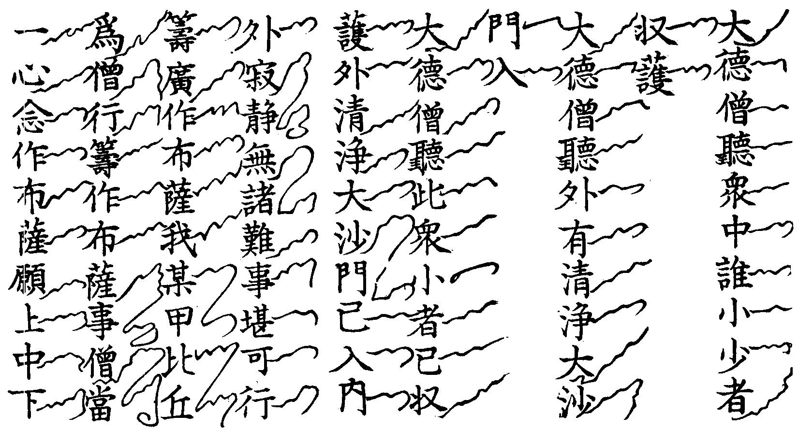
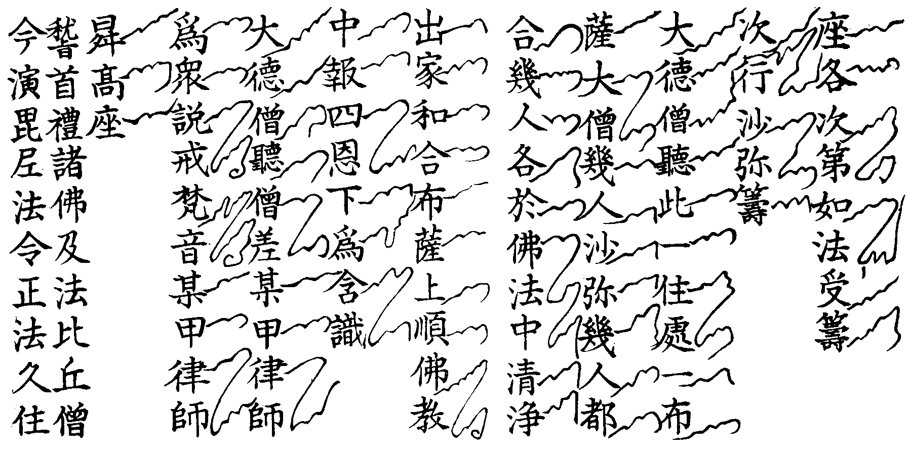
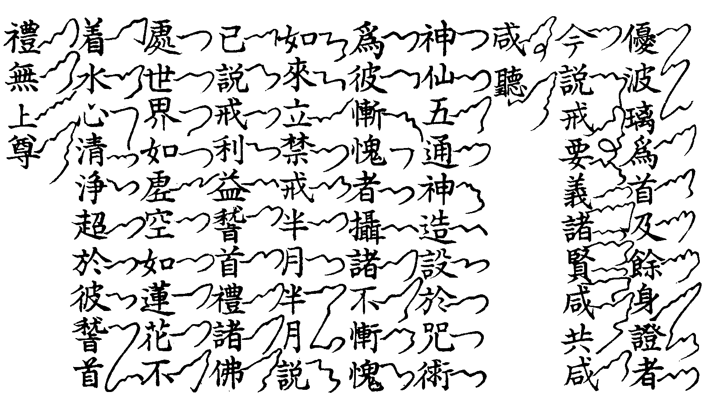

卍新纂大日本續藏經 第60冊
No.1113 律苑事規 (10卷)
【元 省悟編述 嗣良參訂】
第 10 卷
律苑事規卷第十
遮 相看
名勝相看方丈當粥罷參前預到侍司侍者接入分坐献茶湯略敘來歷而起爐前謝茶即稟云(某等時來禮拜和尚輙煩高侍通覆)者云少坐詳詢來歷曾與方丈道舊或法眷鄉人辨事者(欵坐少時容某通報)即覆住持或官客或迫冗稍緩即須相接侍者令裝香秉燭辨茶報新到住持出寢堂侍者引接住持進爐前新到云(請和尚趺坐)免則插香展具又免則通寒溫(云云)入座坐侍者燒香點茶敘話起爐前謝茶即送客位還香回禮盖全賓主之禮也亦須展具俾遞相恭敬規示後學即到侍司到謝云(適煩神用特此拜謝)者云(適間禮合何厪降重)即回安下客頭請半齋點心參前持為湯湯罷藥石來辰粥了請献茶別日置管待古法受香禮管待不可違近來諸方辨事兄弟經行遊覽隨處歇泊住持亦當俯臨報盡主禮也。
邇 西堂首座挂搭
大方西堂名德首座欲作住計語次露意住持當勉留次日請茶了稟云(某教觀未明特來依棲和尚伏望慈悲收錄)住持答云(如蒙不棄得獲同守)別日或即會兩班茶住持躬起燒香一炷即復元位立白云(某處西堂首座不棄來此同守寂寥煩兩班)相送歸房受送人即進前云(某甲特來依捿重荷甄錄)住持兩班送歸齋舍住持居主位詞云(即日恭惟堂頭和尚起居多福宿生慶幸仰荷收錄)住持詞云(山門多幸同守寂寥)送住持出受送人居主揖侍者入作賀送出揖兩班入作賀送出即懷香詣方丈謝床位堂司庫子引詣庫司諸頭首耆舊寮人事且望茶並同孝舊例。
壹 諸方名勝挂搭
相看人事欲求挂搭赴茶罷稟云(某寺心第久塞理觀未明特來依附和尚伏望收錄)住持云(特荷不棄同收寂寥)即請首座都寺維那喫茶住持躬起燒香一炷敘白送意如前受送人進云(某等重蒙和尚收錄即當隨眾以听警策)答云(山門禮當延送)即送歸齋舍住持居主講禮送出門接侍者作賀送出兩班人事了受送人即懷香詣方丈謝床位堂司行者引至庫司諸寮舍人事而已。
體 法眷辨事挂搭
到不抱時先訪侍者詳說來歷令覆住持相看插香行禮若弟姪已下法眷辨事曾執侍者皆當受禮揖香献茶送客位回禮或送齋舍禮興前同。
卛 新來挂搭
律院少有且過新來兄弟首到客司推熟叢林者為參頭領眾具威儀列門右白云(暫到相看)知客即接入詞云(即日恭惟知賓尊長律師尊侯起居多福久欽道譽獲奉瞻仰下情不勝感激之至)答云(山門多幸特荷遠來)揖坐燒香喫茶詢來歷即起謝茶如無安下處即就客司圍爐等處安歇知客就送回禮參頭接入普問訊知客云(移刻恭惟諸位鄉長律師尊候起居多福適承降重特此拜謝下情不勝感激之至)答云(禮合拜看何勤降重)參頭自送出門次詣侍司相看行禮如前立稟云(某等特來禮拜和尚敢煩侍者通覆)侍者詢來歷覆住持如允報相看或即時或粥了寢堂相接參頭進前請趺坐轉身在手插香退身同眾行禮三拜就座侍者燒香喫茶謝茶與前相看禮仝詞少異住持送出參頭云(和尚尊重)隨至侍司致謝云(有勞神用特此拜謝)歸安下處門外下手排立候住持回禮同問訊接入詞云(移刻恭惟堂頭和尚尊候起居多福適來禮拜不專返辱降重下情不勝感激之至)住持云(安下不便幸望寬懷)眾送出參頭轉上手揖侍者入同眾問訊云(移刻恭惟高侍律師起居多福禮合詣寮拜看返辱降重下情多感)者云(山門多幸特荷遠臨報謝在遲不勝多愧)半齋點心當晚特為湯了就座藥石行者燒藥石香一炷或頭首光伴食了住持送出次日粥了請茶喫茶謝茶等禮並如常茶罷新來詣侍司屈侍者稟住持言新來欲歸堂之意如允許了侍者發榜頭下堂司隨即請茶維那接人燒香喫茶了稟云(某等蒙和尚令依左右伏望甄錄)答云(山門多幸同聚寂寥)取度牒付維那上戒臘簿了維那付度牒還參頭各收訖維那同到新來安下處問訊客云(茲來多幸重辱溫存下情不勝感激之至)答云(房舍不便幸乞寬處)參頭送維那出問訊而散次堂司行者寫榜頭卛香錢付侍者回香侍者回大香或一片或各片與行者付參頭次稟挂搭日子名書門狀次日寢堂嚴設香几爐燭參頭領眾列立三人一引每引一人為小參頭詳記詞語進退儀即預須一處習儀庶臨時成現至時侍者同參頭入請住持出廟位立參頭歸位眾同問訊後進前云(請和尚趺坐)從爐裡轉復位同眾問訊(〔再同〕)進爐前(〔於各〕)懷取香左手插香復位本引三人一同問訊展具三拜了參頭進前云(即日云云某等宿生慶幸獲奉依棲下情不勝榮幸之至)一齊問訊過右邊直待班尾三三趲上禮語仝前俟各行禮畢普同問訊而退(次到侍司首座庫司諸寮巡廊人事畢歸齊候回禮)。
○榜頭式
(奉方丈慈旨挂搭二僧（某甲）侍者（某甲）律師今月巳日侍司（某甲）報)。
○卛香小榜
○方丈門狀式
(某路某州某寺小比丘 某甲)
(右某甲謹 詣)
(函丈[袖-由+丘]候)
(禮 拜)
(某寺堂上和尚大宗主伏候)
(慈旨)
年 月 日 某路某寺某小比丘某甲狀
賓 方丈回禮
至日挂搭了方丈回禮新挂搭人參頭領眾就一處房外下手排立候接住持入齋問訊云(移刻恭惟堂頭和尚尊候起居多福理合禮拜反沐降重下情不勝感激之至)眾送住持出隨入齋轉上手立參頭接侍者入詞云(某等獲依左右茲沐降重下情不勝感激之至)答云(拜謝不專下情不勝感激之至)參頭送出接兩班入詞語同前畢眾挂搭人轉下手副參為首謝參頭問訊而散。
歸 謝挂搭茶
侍者照戒臘具挂搭者雙字名(某甲律師)令方丈客頭詣各訪請云(今辰齋退方丈和尚請就寢堂特為點茶)如西堂首座亦依戒次寫入次令客頭排立請首座光伴如名德西堂首座與住持對面位參頭次須當相遜無至喧聒失禮齋了鳴皷集眾燒香侍者揖入住持接敘寒暄次接光伴人問訊詞語尋常茶同各依照牌入位照牌預稟住持看定二侍者行禮與結制小座湯禮同(禪規寫茶狀各僉名依命)若例禪規次日庫司點挂搭茶於庫司設位首座光伴齊了鳴庫堂前板上首知事與同班行禮同前又次日堂司點挂搭茶上首知事光伴鳴寮前板一班行禮或四人六人列位頭問訊若知客行禮揖香了座同茶三日講行此古法也方丈茶鳴皷知事頭首茶鳴板互為主伴方丈茶眾起謝知事頭首茶只參頭離位謝此禮亦當行之。
王 參堂
新挂搭欲參堂先一日晚詣堂司屈維那至方丈稟請住持云(新挂搭兄弟來早欲參堂伏望和尚慈悲尊降)請訖歸堂兄弟在來日早粥皆於外堂展鉢少少盛粥留於禪床預推一人為參頭侯內堂粥徧行者出堂參頭領眾前門入堂先舉左足聖僧前排立參頭燒香歸位同眾大展三拜收具問訊參頭先至住持前列一行立普同問訊低首合掌巡堂一匝自上堂至下堂出外堂先下間次上間再入堂內中間列立問訊出堂歸鉢位喫而已。
○迁齋狀式
講下小比丘(某甲)
右(某甲)今欲迁(某)齋在下脫著未敢自便謹狀上呈 本講依止和尚大宗主伏乞 慈判付(某)照證謹狀
年 月 日 講下小比丘 (某甲) 狀
堂司比丘(某甲)備用 (方丈)題初三日 押(方丈押)
(如來有齋名却云欲迁齋舍在下脫著未蒙 慈旨)
鳴 請益禮師
投情請益先詣侍司詳稟侍者咨覆住持云(某甲)律師來早欲詣方丈請益如允所請早粥了詣侍司俟候(某)侍者隨住持坐處令秉燭裝香引入問訊插香一片大展九拜收具進前問訊云(某甲心第久塞義路未開伏望和尚慈悲方便提示)肅躬側立下手諦听法誨埀問來歷從實稟答了進前問訊而退次詣侍司致謝或就廊下頭首西堂請益行禮一仝。
鳳 開講
開講訓徒以成叢林當然之事講者訓誨無倦听者專心至志何患事業不成耶遇開講日堂司行者於僧堂早粥再講了覆住持開講云(今日和尚打講)却於下堂鐘絕後略歇打靜鐘三下(首座開講在齋後打靜鐘同上)繼於法堂(東西)柱挂開講牌維那合堂司行者整齋講筵至半齋前覆方丈打起如方丈有他緣打放講鐘二下(或迎送或普講或送亡則放講)如開講先巡廊打小板次打僧堂前鐘眾集法堂燒香爐前隨意設拜不拘次第堂鐘絕打法皷先擂三通上磉轉通之時直日人鳴引二下維那舉七佛略教經至應當學再鳴引二下直日起賷坐具至(東西)廊法堂頭候開講人來鳴引二下問訊眾人聞引鳴皆提具起立疎疎鳴引至法堂爐前西首立講人燒香三拜未拜前直日鳴引二下歸位講人揖眾眾皆應揖拜起收具問訊從(東西)首升座座上燒香鳴引二下講人與眾齊揖放具而坐講人鳴尺三下舉稽首禮諸佛(云云)至莊嚴種智乞聖冥加畢開講人舉南無本師釋迦牟尼佛(南山大智各三聲)各尺一下開卷講說延促隨意講了掩卷講人鳴尺一下云上來說听功德祝献護法諸天報答四恩三有伽藍真宰護教安僧法界眾生同圓種智十方三世(云云佛菩薩號中名尺一下)眾起立講人下座至爐前直日鳴引二下講人與眾不同問訊而散(住持行東道首座行西道)。
在 參講
住持開講座下未聞者理當參之或諸山來亦行參禮若首座講住持亦參之重法故也凡外來參講者待鐘鳴至法堂座邊不次而坐待眾念大智律師號時起身至爐前立定參頭燒香退步同問訊展具三拜若四人以上則不應同拜盖眾不禮別也若言師禮拜則不拘若論謙光俱不受拜如參講人位尊先於座下西首設位開講人當起立令侍者傳語免禮請坐講人於掩卷後作詞敘謝(或四六或散文隨意言之)講人下座至爐前略謝參講次詣下處賷香致謝其茶湯藥石煎點之禮如前已明。
樹 晨朝禮
每晨寺眾長版纔鳴出諸殿堂燒香至殿內隨意禮拜如人至多則不可拜住持待木魚響出諸殿堂燒香頭首當在殿外同住持燒香將徧頭首入殿淨人打過堂板住持上殿鳴大磬三下維那舉經住持燒香遶殿而轉歸中間蒲團位堂司行者預將舉禮牌置於當做禮人前經畢舉禮人念一切恭敬(云云如晨朝禮儀中)三歸依了收具住持舉彌陀讚念佛百聲菩薩各三聲(餘如常法)至十方三世(云云)了維那舉消災呪住持領眾赴堂。
白 施主
南無十方佛(法僧三稱了念)神呪加持淨飲食普施河沙眾鬼神願皆飽滿捨慳心即脫幽冥生善道歸依三寶學菩提究竟得成無上覺功德無邊盡未來一切眾生同法食 呪。
曩謨薩縛怛多孽跢縛路枳帝唵三跋羅三跋羅吽
(念七遍以淨水洒食 次念甘露水真言)。
(三遍 次念四如來號)。
(三稱 次念受食願文)。
此食色香味上供十方佛中奉諸賢聖下及六道品等施無差別隨感皆飽滿令諸施主得無量波羅蜜
(次出)生偈。
汝等鬼神眾 我今施汝供 此食遍十方 一切鬼神共 願以此功德(云云至十方三世云云)。
駒 普回向
(諷經持呪)功德祝献護法諸天報答四恩三有伽藍真宰護教安僧法界眾生同圓種智十方三世(云云)。
○眾回向
以此諷經念佛功德祝献護法諸天報答四恩三有利樂法界眾生我等比丘懺悔罪根莊嚴淨土願此身報盡臨捨壽時承此善根決定得生極樂世界見佛聞法速證菩提廣度群生大作佛事。
食 四節土地堂回向
結解冬歲宜於土地堂嚴設供養諷經回向云。
○結夏
切以薰風扇野炎帝司力當法王禁足之辰是釋子護生之日乞所加護以遂安居恭裒大眾詣靈祠持誦(消災威德呪經萬行楞嚴秘章)稱念摩訶佛母聖號集茲功德化煉馬財專伸奉貢當地山土地(列位)合堂真宰所冀神光叶贊發輝有利之勛律苑起隆永錫無私之度十方三世(云云)。
○解夏
切以金風扇野白帝司方當覺皇解制之辰是法歲周圓之日九旬無難一眾咸安是用秘章以酬洪德。
○至節
○除夕
場 楞嚴普回向
上來現前比丘眾 諷誦楞嚴秘密呪
回向護法眾龍天 土地伽藍諸聖造
三塗八難俱離苦 四恩三有盡霑恩
國界安寧兵革消 風調雨順民康樂
一眾熏修希精進 十地頓超無難事
山門鎮靜絕非虞 檀信歸依增福慧
又回向云。
妙湛總持不動尊 首楞嚴王世希有
銷我億劫顛倒想 不歷僧祇獲法身
仰冀洪慈俯垂昭鑑(敘情迴向神位了云)
先願皇風永扇帝道遐昌佛日增輝法輪常轉。
次冀山門鎮靜中外咸安火盜公私諸緣吉慶現前僧眾修行有序進道無魔般若智以現前菩提心而不退四恩普報三有齊資法界有情同圓種智十方三世(云云已上迴向乃禪宗楞嚴會行之人誦者多故附於此)。
化 日用偈章
凡曰出家心形異俗鷄鳴而起謀利圖名顯行既無密功奚有然而十二時中所為之事佛經俱有遺誡可不依而行之謹錄于后。
○睡時
若就睡時 當願眾生 一切安穩 得大自在
○起時
睡眠始寤 當願眾生 一切智覺 周顧十方
○登溷
大小便利 當願眾生 棄貪嗔癡 蠲除罪垢
○洗手
事訖就水 當願眾生 出世法中 速疾而往
○洗面
以水洗面 當願眾生 得淨法門 永無垢染
○登殿
若見佛時 當願眾生 得無礙眼 見十方佛
○登閣
上昇樓閣 當願眾生 昇正法樓 徹見一切
○瞻塔
見佛塔時 當願眾生 尊重如塔 受人天供
○禮塔
頂禮於塔 當願眾生 一切天人 無能見頂
○濯足
若濯足時 當願眾生 具足神力 諸行無礙
○洗浴
洗浴身體 當願眾生 身心無垢 內外光潔
○受食
若受食時 當願眾生 具足成滿 一切菩提
○食齋粥
若(小飯)食時 當願眾生 禪悅為食 法喜充滿
○食訖
(小飯)食已訖 當願眾生 所作皆辨 具諸佛法
○受味
若受味時 當願眾生 得佛上味 甘露滿足
○施粥
粥有十利 饒益行人 果報無邊 究竟常樂
○又偈
持戒清淨人所奉 恭敬隨時以粥施
十利饒益於行者 色力壽樂詞清辨
宿食風除餓渴消 是名為藥佛所說
欲得人天長壽樂 應當以粥施眾僧
○施齋
三德六味 施佛及僧 法界有情 普同供養
(三德者一輕輭二淨潔三如法六味者一甘二苦三辛四酸五鹹六淡)。
○又食訖偈
飯食已訖色力充 威振十方三世雄
回因轉果不在念 一切眾生獲神通
○五觀
一計功多少量彼來處 二忖己德行全缺應供
三防心離過貪等為宗 四正事良藥為療形枯
五為成道業故應受此食
○禮佛
能禮所禮性空寂 感應道交難思議
我此道場如帝珠 諸佛菩薩影現中
我身影現(諸佛菩薩)前 頭面接足歸命禮
○禮釋迦讚
容顏甚奇妙 光明照十方 我昔曾供養
今復還親覲 聖主天中王 迦陵頻伽聲
哀愍眾生者 我等今(敬禮贊嘆)
○讚彌陀
阿彌陀佛真金色 相好端嚴無等倫
白毫宛轉五須彌 紺目澄清四大海
光中化佛無數億 化菩薩眾億無邊
四十八願度眾生 九品咸令登彼岸
○又偈
稽首阿彌陀 救世大慈父 甚深真法藏
三乘賢聖僧 我以誠實心 求生佛淨土
願諸本弘誓 普運無緣慈 應念赴機緣
猶如水中月
○又彌陀讚(大智律師作)
八萬四千之妙相得非本性彌陀十方億剎之遐方的是唯心淨土淨穢雖隔豈越自心生佛乃殊寧乖己性心體虗曠不礙往來性本包容何妨取捨是以舉念即登於寶界还歸地產之家鄉彈指仰對於慈容實會天真之父子幾生負德枉受沈淪今日投誠必蒙拯濟三心圓發一志西馳盡來際以依承歷塵劫而稱贊。
○讚菩薩偈
○讚觀音
紫金化身千百億 白衣妙相三十二
稽首圓通自在尊 沙界咸稱大悲智
○開經偈
無上甚深微妙法 百千萬劫難遭遇
我今見聞得受持 願解如來真實義
○還經偈
○訖經
三塗永息長時苦 六趣休隨汩沒因
無邊含識悟真如 一切有情登彼岸
○三歸依
○化教六念
念佛救世大慈父 念法出離解脫門
念僧諸有良福田 念戒無上菩提本
念施具足波羅蜜 念天護法離群生
○四弘願
眾生無邊誓願度 煩惱無數誓願斷
法門無量誓願學 佛道無上誓願成
○懺悔偈
我昔所造諸惡業 皆由無始貪嗔癡
從身語意之所生 一切我今皆懺悔
○往生偈
願我臨欲命終時 盡除一切諸障礙
面見彼佛阿彌陀 即得往生安樂剎
○又偈
我既往生彼國已 現前成就此大願
一切圓滿盡無餘 利樂一切眾生界
彼佛眾會咸清淨 我時於勝蓮華生
親觀如來無量光 現前授我菩提記
蒙彼如來授記已 化身無數百俱胝
智力廣大遍十方 普利一切眾生界
乃至虗空世界盡 眾生及業煩惱盡
如是一切無盡時 我願究竟恒無盡
○普曜經偈
是日已過 命則隨減 如少水魚 斯亦何樂
當勤精進 如救頭然 但念無常 慎莫放逸
板 歲旦元宵
正旦元宵各寺祈禱規式不同或修光明觀音等懺或誦經文或秖課呪無非懺洗已往之過祈集將來之福也隨方毗尼難為定式。
草 青苗祈禱
萬年常住全藉田租秋糓不熟何以安僧理當精加祈禱以求陰助各處規式不一或只就寺營供佛天看經諷呪或到莊所遶田行道並宜隨方上年已行不可越例為住持知事者可不究心也耶。
伏願 五樂欲茂須求雨澤應時萬法告成全藉神明陰佑謹仍舊貫預設良緣就寺集僧遶田行道諷誦經呪化煉馬財奉献(云云)專冀畝畝豐登田田秀實螟螣蟊賊永無耗損之憂黍稷稻粱大有盈餘之慶。
木 秉白梵音聲圖



賴 行堂諸儀
○行堂點茶
結解節臈眾僧茶罷方丈侍者同客頭至行堂點茶客頭預報參頭挂牌報眾燒湯出盞請典座光伴方丈預送茶侍者至庫司典座接入參頭堂主領眾門迎侍者居主位代住持也典座右位侍者出爐前燒香一炷復位以手揖眾坐行茶畢典座送出參頭堂主門送即詣方丈謝茶。
○方丈點茶
罷知事詣行堂點茶知事居主位典座光伴與方丈茶禮仝送出門喝云(參頭大眾詣庫司謝茶)報云(知事傳悟免謝茶)。
○頭首點行堂茶
令堂司行者報參頭挂牌報眾燒湯出盞請典座光伴頭首居右為禮與前同喝謝茶復喝免。
○訓童行
參頭行者令歇食行者報各局務行者行堂前挂牌報眾昏鐘鳴行堂前鳴板三下集眾行者上寢堂立定參頭入方丈請住持出就座參頭進前插香歇參同問訊九拜進前屏息拱听規誨已又同眾三拜珍重而退預令寢堂裝香秉燭係侍者提調。
○行堂普說
參頭預詣侍司插香禮拜稟侍者咨覆住持若允所請參頭即鳴板集眾排立寢堂參頭隨侍者入請住持出據座參頭同眾問訊進前插香歇食行者喝云(不審)同眾禮九拜問訊參頭進云(某等久思和尚示誨伏望慈悲開示因緣)退身問訊而散次日行堂挂普說牌報眾面裏設座香机燭臺參頭報請兩班立班副參頭眾門迎兩序入堂參頭堂主詣侍司同請住持下行同堂眾接迎入堂據座侍者一班問訊側立兩班如常出班問訊畢侍者燒香一炷問訊住持請法亦如常參頭領眾鴈列插香喝參三拜退分東西班後鴈立諦听法誨開示已參頭領眾如前排立三拜即出門外右立揖送住持兩班隨至寢堂插大香一片九拜而退次詣侍司插香三拜參頭副參同往兩班人前一一拜謝當免香禮。
及 警眾法器(附月分〔頭〕知)
夫鐘魚皷板乃集僧號領之法器也增一阿含云阿難昇講堂擊犍稚者此是如來信皷也(皷者謂擊動發聲也經論中多名揵槌聲論翻犍巨寒反稚音地此名鐘磬)鈔云僧者以和為義若不齊集相有乖離御法則無成決之功被事必據入非之位四分文云當敷座打犍稚盡共集一處五分云諸比丘布薩時不時集妨行道佛言當唱時至若打犍稚若打皷吹螺使舊住沙彌淨人打不得多應打三通吹螺亦爾除漆毒樹餘木銅鐵凡鳴者听作若無沙彌比丘亦得打鈔又云約僧多少就事緩急量時用之然打鐘法鈔記中引三千威儀經(并)軌度圖經(祖師所撰)及諸經論言三通者即是三下圖經云集三乘也擊數不等若眾法講說宜準四十下為式頗得其中圖經云執杵定心虗揩十下尼鈔云不得大打驚動眾心漸稀漸大乃至聲盡方打三下名為三通其長打之法初四十下如前增兩四十共百二十第二四十下作兩節前十八下生起同前中間十九至二十二共四下聲盡方打此救四惡趣苦(獄鬼畜修)二十三已去後十八下漸漸密小矣第三四十下生起亦同前至後有少異從三十六去打三下名三通末後二下名息槌圖經云念三寶存五眾眾各八輩(四果四向)故以四十為差三通乘之(謂三乘也)則百二十為節若比今時所作三下則同三通則異矣鈔又云若有惡趣受苦眾生令得停息故付法藏傳云罽膩吒王以大殺害故死入千頭魚中劒輪繞身而轉隨斫隨生若聞鐘聲劒輪在空如是因緣遣身向令長打使我苦息即增一阿含云若打鐘時一切惡道諸苦並得停止 今列式于后。
○若結說安恣諸羯磨事及上殿下殿送官員尊宿諸山檀越到寺昏曉齋粥各鳴樓鐘擊數多少量時緩急如上已明其曉鐘者破長夜警睡眠昏鐘者學昏衢蘇蒙昧六道三塗停酸息苦也。
○僧堂前鐘者不以時限維那主之堂司行者覆維那鳴之若開講打靜三下放講二下齋粥應皷八下若三千威儀經後七法中縣官大火大水賊盜此四隨時會沙彌三下會優婆塞二下呼私兒一下。
○若皷之號令各有其所法堂皷結說安恣諸羯磨事開講說法皷擂三通上磉再轉三通小座湯特為茶各長擊一通退座三下若借座借皷鳴法堂下間皷齋粥二時鳴皷三槌九擂上磉復三槌九擂若轉藏鳴藏皷若開浴有浴皷茶湯茶皷發更更皷務令知時也。
○開大靜及齋粥鳴大板三通(大板者長板也)若請茶湯須緩擊照應行禮請茶三下方丈請茶湯鳴寢堂板庫司茶湯鳴庫堂前板報眾鳴諸寮前廊下板。
○殿堂行香各處有鐘不許亂倫乖違法令茲筆其略乖於無窮所謂鐘鳴鼎食三代禮樂者於斯可見也。
○月分須知
正月旦
上元節諸寺殿堂多修懺法或供佛天宜各專誠祈一年之福也官員檀越致賀門狀式兩序進退山門禮節輕重合宜不可違例隨方毗尼毋易毋局。
二月望
佛涅槃當修例堂司行者卛眾錢送庫司營供養住持首座宜開春講訓誨弟兄不暖不寒正是著鞭時節豈可虗望喪光陰整理莊田提督農務。
三月分
寒食節祖堂祠堂鋪陳供養照例諷經掃洒祖堂禁採茶筍蔭[禾*養]山林。
四月分
如來誕庫司嚴設毗藍園浴佛營供養諷經方丈呌喚江湖點心維那差說戒安居行事人牌及出禮誦等圖 十五日晚請小座湯(禪規有十四日)十六日結夏或有律院安居前三日先呪沙水留大殿於安居日撒洒制後三日茶湯看經祈禱了住持啟講。
五月分
建青苗會或出經單或集眾看經或營供養或到田所行道並宜隨方首座開晚講至暮習讀策勤來學諸庵塔中有老成者亦當溫存。
六月分
酷熱做中夏麫講筵開歇在人行之九旬修道尅期取證住持首座宜加鞭策此非細事宜合醬做醋麵豆豉事計等物。
七月分
修父母懺誦梵網經設蘭盆供而解夏等禮具如自恣儀中請監收須擇人。
八月分
九月初一日
十月初三日
十一月分
十二月分
佛成道營供養住持計筭錢糓簿書搬量米麥五味之屬或兩序進退每事修例可也掃洒殿宇習修歲懺預辨賀年儀物。
律苑事規卷第十(終)
古人云業精于勤荒于嬉今之人少有自勤非策而勤之則不能精于業也古來學肆春秋長講令止於夏中以了故事制後三日祈禱畢四日齋前住持啟講又三日首座宜啟晚講五日初去便乃習讀掛習講牌於法堂每至參前上殿後住持令行者打靜鐘三下至昏黃時學子提灯至法堂而與科目者各宜努刀西堂耆舊亦當與席作成叢林也直日侍者送引子與維那唱二火後住持至法堂就座維那鳴引二下使眾寂然無聲(有處堂賓二司每夜輪行湯茶)喝三後維那鳴引二下直日侍者至維那前問訊取覆講盛鬮合子安住持机上住持問訊了開鬮合住持信手混括一鬮付與直日展開呈住持了高聲喝云(某甲侍者覆講)却將拈出之鬮以示覆人了仍入鬮合中還置維那前(有處併將引科策文二鬮一道拈定對眾白之次第而出)而堂司行者將燭二條置覆講人前卓上覆人却覆本日住持所講之文不可覆以次人講預宜研精覃思說驚人語使眾悚听而荒怠者寧不知愧覆畢維那鳴引二下直日再至維那前取引科鬮合至住持前。
拈了唱云(某甲律師引科言文)還鬮合置明灯如上引科畢取合再拈策文人鬮或一人或二三人命出住持行禮如上維那鳴引二下策文人將所讀冊子置維那前指其起誦處却於中間大香爐前叉手朝裏立以誦所讀之文須言詞了了詳緩合節起止可觀如誦多文長維那鳴引二下策文人住聲止誦再進維那前問訊取所誦冊子回元坐處其次拈出策文人亦如上誦之俱位畢住持首座比校策文人善誦者賞之以紙筆墨扇等不善誦者亦當罸之以警諸怠習讀畢住持回方丈維那鳴引二下策文人出聲誦文引子回與直日頭首各回司三科之人各宜進業夜夜如斯若住持他出前堂首座攝行其事中夏後觀時涼執一或講或歇在住持行之然而欲成人才令在策勵尺璧非寶豈可虗喪光陰也耶。
新來兄弟酋先熟讀律宗會元及諸序文請益師處說通義路方可引科引科者乃引住持來日所講之文學思俱到左右逢原方與覆述之科若也文師口講在紙中安能見於斯義也。